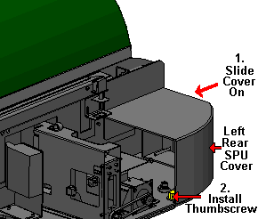

Installing SPU
This procedure describes how to mount the sample presentation unit (SPU) onto the instrument.
Warning: Two people are required for this procedure because the SPU is awkward and heavy. Use caution when handling the SPU to prevent injury to service personnel and damage to the SPU.
-
If the swing plate was removed, mount the swing plate.
-
Mount the SPU.
-
Align and attach the SPU to the swing plate using the pivot screw, track screw, and locking screw.
Install these screws, but do not tighten them. The screw is tightened later.

-
Slide the off-load area of the SPU forward. Align and attach the front screw on the far left underside of the SPU (DxI 800 instrument).

-
Align and attach the SPU to the swing plate using the pivot screw, track screw, and locking screw.
-
Attach the electrical connectors.
-
Finalize the mounting.
-
Tighten the locking screw.
-
For DxI 600 instruments only:
- Install the left rear cover from the SPU by sliding it to the right, toward the SPU.
- Install the thumbscrew.
- Open the tinted cover on the SPU.
- Install the screws in the SPU off-load area.


-
Tighten the locking screw.
-
Verify the proper operation of the system.